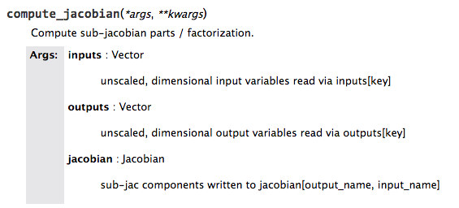
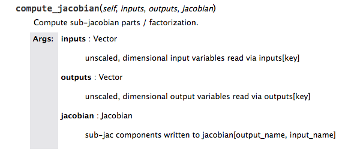

Sphinx and Decorated Methods¶
Sphinx does not correctly handle decorated methods. To ensure a method’s call signature appears correctly in the docs, put the call signature of the method into the first line of the docstring.
For example, if you have decorator that looks like this:
from functools import wraps def mydecorator(f): @wraps(f) def wrapped(*args, **kwargs): print "Before decorated function" r = f(*args, **kwargs) print "After decorated function" return r return wrapped
and a method that looks like this and has the decorator applied to it:
@mydecorator def compute_partials(self, inputs, partials): """ Compute sub-jacobian parts / factorization. Parameters ---------- inputs : Vector unscaled, dimensional input variables read via inputs[key] partials : Jacobian sub-jac components written to partials[output_name, input_name] """ pass
The docs will look like this:

But if we add the call signature of the method to the docstring as the first line like this:
@mydecorator def compute_partials(self, inputs, partials): """ Compute sub-jacobian parts / factorization. Parameters ---------- inputs : Vector unscaled, dimensional input variables read via inputs[key] partials : Jacobian sub-jac components written to partials[output_name, input_name] """ pass
The documentation that results shows the correct call signature:
